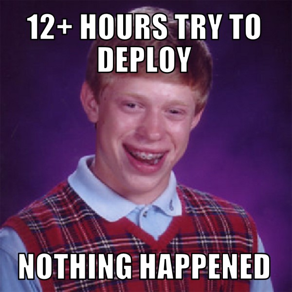

Saya merasa tertantang untuk mengerjakan project mengenai pimp-up ini. Saya memutuskan untuk menggunakan python untuk mengerjakan tugas ini, dan berharap semuanya berjalan mulus.Dengan banyaknya tugas setelah menyelesaikannya baru saya akan mengerjakan project untuk MSP Pimp-up
Saya melihat sebuah package yang menarik, namanya odoa(one day one ayah) atau mungkin di Indonesiakan "satu hari satu juz"(maaf kalau salah). ide saya kali ini menggunakan restful, dengan python sebagai server dan php sebagai client. untuk php saya menggunakan flask sebagai frameworknya.
Semuanya berjalan dengan baik, sampai saya mencoba untuk mendeploy ke azure, dan tidak terjadi sesuatu. ternyata pythonnya saya deploy sebagai web apps, dimana seharusnya sebagai server. Dengan memanfaatkan search engine dan stackoverflow saya menemukan bahwa seharusnya ada VM machine yang bertindak sebagai server, dan sepertinya untuk azure yang menggunakan dreamspark belum bisa.(cmiiw)
Dan sepertinya semua berjalan cukup kacau. daripada saya tidak melakukan sesuatu, lebih baik saya membuat web berisi curahan hati saya. Setidaknya saya sudah menaruh project saya di github, mungkin bisa dilihat nanti.
